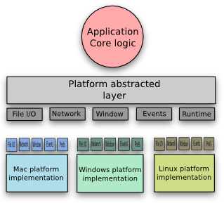

Please note: this article is part of the older "Objective-C era" on Cocoa with Love. I don't keep these articles up-to-date; please be wary of broken code or potentially out-of-date information. Read "A new era for Cocoa with Love" for more.
Design of a multi-platform app using The Cocotron
In this post, I'll talk about how multi-platform applications are structured and talk about some of the different ways that applications separate core logic from platform specific behaviors. I'll talk about how using a porting layer like The Cocotron fits into these designs and why using The Cocotron doesn't necessarily mean that you're ignoring best-practice or creating a second-class application.
Disclaimer: I'm not associated with The Cocotron, I just think it's really cool.
Multi-platform abstractions
In my previous post, I talked about different libraries, APIs and SDKs that can be used to help adapt and link a Cocoa application for running under Windows.
Commenters on that post pointed out that I omitted any discussion of the structural and design considerations in abstracting platform specific behaviors from the core logic of your program.
A simple model of platform abstractions
Generally, the aim is to structure a multi-platform program like this:
The idea is that your program should never need to write any platform specific code outside of the platform implementations. The platform abstracted layer is the layer to which your core application talks. This abstracted layer is then connected to multiple implementations underneath whose responsibility it is to perform the correct platform specific actions corresponding to the abstracted invocations above.
As easy as it is to draw a diagram like this, it says very little about how it will actually work.
The reality is that a high-quality, multi-platform application is dependent upon how well the platform specific implementation works and whether it follows the rules and guidelines of the target platform.
In order that a platform specific implementation correctly behaves as a native application on specific platforms, you need to add further code at the platform implementation layer — in some cases, moving the entire user-interface layout and structure into this layer is required to properly create the look-and-feel for the platform.
However, growing the platform implementation level in this way, you eventually end up with unrelated applications on each platform that just happen to share a common library to perform some internal work.
Have a look at how open source applications like Transmission and VLC are developed: they share a library to handle most of the processing or data manipulation work but the actual application is completely rewritten from platform to platform — all of what the user sees is platform specific. They may be layed out to look similar from platform to platform but this is because they have been separately implemented to replicate each other.
Increasing common functionality between platform implementations
Writing a completely different application for every platform that just happens to share a core library is not a bad way to write a multi-platform application but it takes a huge amount of effort and the platform implementations may tend to drift away from each other in terms of appearance and functionality since they are so different at a user level.
The reality is that you will probably want to forgo some platform distinctiveness for common behavior. A very good abstraction and implementation layer can still adapt this back to the native style of the platform to the point where the user cannot tell the difference.
As an example Firefox choose to forgo all standard platform controls and draw everything themselves. This allows Firefox to use its own user-interface layout and design and expose control over these traits to the core application.
However, early versions of Firefox were critically attacked for not sufficiently mapping its own user-interface design onto the Mac platform. Windows didn't highlight and unhighlight correctly. Popup menus didn't match native popup menus. Drawing speed was poor. The reality was not that abstracting user-interface controls was inherently flawed but simply the platform specific implementation needed to significant work to correctly map the abstraction onto something that meshed with the native platform.
It is not an inherently bad idea to abstract some aspects of the platform implementation but you need to remember that a poor implementation of an abstraction may end up taking more work to fix than the abstraction saved in the first place. Multi-platform is a struggle to decide which functionality should be abstracted and which should be re-implemented.
How does this relate to porting to Windows with Cocotron?
The Cocotron treats Cocoa itself as though it is the platform abstracted layer. It then uses a series of platform-specific class implementations (for example NSTask has a platform specific implementation: NSTask_win32) to map functionality onto target platforms.
This may seem strange if you're accustomed to considering Cocoa as though it is the Mac OS. The reality is though that AppKit and Foundation do not expose much of the underlying operating system at all. In a Cocoa application, you will never write directly to the Window Server, you will rarely use direct hardware access like IOKit and you should never hardcode paths to locations on your hard drive.
A well-written application framework is already an abstraction layer. It needs to be so that the operating system can be updated without breaking all existing programs.
Cocoa is implemented on the Mac upon Apple's Objective-C runtime, the Mach/XNU kernel and ABI, the Mac OS X Window Server and various private frameworks, BSD and POSIX components that comprise the greater operating system.
The Cocotron takes the same Cocoa API but instead chooses to implement it on top of its own runtime, the Windows ABI, GDI drawing and Windows messages, and the the other Win32 DLLs as prepared by MinGW for cross-compilation.
Cocotron's Win32 implementation
Windows messages are drawn out of a standard Win32 WindowProcs, PeekMsg and MsgWaitForMultipleObjects calls. The messages are transformed into the equivalent NSEvents and are rerouted to follow the event routing as required by Cocoa.
All drawing at the AppKit level is implemented using CoreGraphics, which is itself implemented using a set of classes that The Cocotron calls "O2Graphics" of which the platform implementation O2Context_gdi is just a regular GDI HWND and O2DeviceContext_gdi is an ordinary HDC, all of which are drawn using standard GDI drawing commands.
NSFileHandle_win32 uses standard Windows HANDLEs internally (in place of the file descriptors used on the Mac), BSD sockets become WSA sockets, NSFonts become HFONTs and paths are separated by backslashes.
In many respects, it is amazing how seamlessly a high level application framework like Cocoa can be remapped onto a completely different low-level implementation like Win32. Of course, the experience is unlikely to be totally seamless but much of that is due to The Cocotron's work-in-progress status; in a reasonable sized program, you're likely to encounter classes and functions which haven't been implemented yet — or whose implementation has not been fully tested.
A corollary here: don't expect that The Cocotron will let you port your application to Windows without you knowing (or at least learning) some Win32. It is highly likely that you'll need to write at least some of the Windows implementation for your application yourself.
The Cocotron versus WINE
The Cocotron treats the Cocoa frameworks like a platform abstracted layer and reimplement them under Windows.
Isn't this the same thing that WINE does to reimplement Win32 DLLs on Linux?
Yes and no.
Firstly: Cocoa is a higher-level API than Win32. The high level nature of Cocoa makes it easier to abstract from its native environment and reimplement. As I stated before: Cocoa already has an under-the-hood implementation on the Mac and The Cocotron is simply filling in for this. By comparison, Win32 doesn't necessarily have an under-the-hood implementation; in many respects, it is the under-the-hood implementation upon which higher level APIs in Windows are built. WINE must work much harder to allow Win32 applications to run outside of their native environment.
Secondly: you can make a special build of The Cocotron to work in a way that is most appropriate for your application. This allows you to create a higher quality of native application by adding the native behaviors your application needs in its target environment. You can also implement or bug fix features that your application uses; you can make sure there are no problems with your program running under Windows.
Thirdly: You use The Cocotron by compiling and linking against it; it's not simply swapped in place of the native Cocoa frameworks. This means that at compile time, significant portions of the program can be changed and be aware of a Windows environment.
"Native-ness" of the end result
Does the Cocotron appear as a native windows application?
The short answer is: not initially.
The reality is that The Cocotron interprets your XIB files and menus literally — it makes the best attempt to have the Windows application look exactly like the Mac application. The end result is something that looks a lot like a Mac application that has suddenly appeared on Windows.
If you don't mind how the application looks and behaves, then it probably doesn't matter — once the application is functional you can stop.
However, if you're looking to properly integrate as a Windows application, you'll want to generate different XIB files (yes, that's right, you can still use Mac XIB files to create a better Windows application — just change the layout) to rework the interface so that controls are positioned more like Windows applications. At the same time, you can change images, colors and other traits so that the user-interface looks less like a Mac skin.
Rethinking how menus are used on Windows is also an important step: Windows has been slowly deprecating menu bars over the last few years, whereas menus are still an important user-interface feature on the Mac.
You'd probably also want to abstract away traits like "Sheets" (modal dialogs that are stuck to the front of an existing window) since these appear quite foreign on Windows.
You might also want to remove the custom button drawing that The Cocotron uses to simulate the different Mac OS button styles and instead revert to natively drawn buttons where appropriate.
Appropriateness of using The Cocotron for a multi-platform application
The biggest advantage that The Cocotron offers over other means of writing a multi-platform application is simple, low effort porting of simple applications from the Mac to Windows. In this capacity, it is a huge time saver.
Outside this scenario, it is less compelling.
While Cocoa works fairly well as an abstraction layer, it certainly does a number of things that are not appropriate on all platforms and for which some run-around is required.
Further, The Cocotron targets Win32 on Windows. Very few people are writing programs in raw Win32 any more. Few people would want to; it's horrific! This isn't a poor choice made by The Cocotron — it's the appropriate API on Windows for a low-level implementation — but it's not exactly programmer friendly. Extending and expanding bottom level features in Win32 is slow and uncomfortable.
Long story short: The Cocotron is great for porting small Cocoa applications to Windows quickly. It does a good job of that, but for larger programs, for platforms other than Mac/Windows, or for applications that are not predominantly Cocoa, you would probably want to draw the platform abstraction line at a different point and keep AppKit and Foundation out of your application's core.
Conclusion
I didn't intend to have another post full of words rather than code so soon after the last one. It looks like I failed miserably.
However, last week I received numerous emails, and a few comments on the post itself, questioning if using an API like The Cocotron was ever a good idea. The question asked was: surely the best practice is to avoid a porting library like The Cocotron and instead focus on building a platform independent core and then write completely native implementations for each platform?
There's no right-in-all-cases answer.
If your application is already written in Objective-C, then The Cocotron is certainly the fastest way to bring your application to Windows and it is as capable as any other Win32 implementation of delivering a first rate experience.
I'm not pretending that there is no additional work required to make the end result look properly at home on Windows. The Cocotron ports your program somewhat literally. As you'd expect, reinterpretation — in this case, to match the style of the target platform — must always be done by a human and an extra step.
Options for porting Objective-C/Cocoa apps to Windows
Porting a Mac program to Windows using The Cocotron